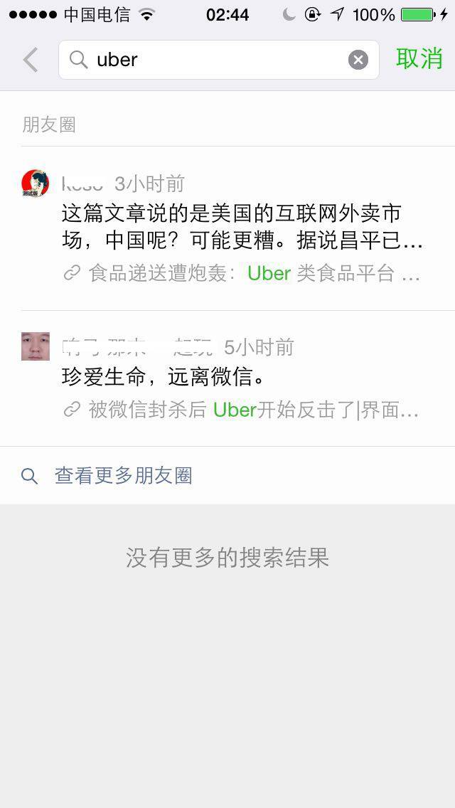

微信、Uber、阴谋论和口袋罪
Contents

微信又一次封了Uber一堆帐号的事情应该大家都知道了。到底是微信因为腾讯投资的滴滴和Uber竞争而拉了偏手，还是因为Uber营销违反了微信公布的规则，每个人都有不同的看法。我没打算专门写一篇文章去给Uber鸣冤，而想讨论个更大的话题。
但首先要明确的是，认为此事和滴滴有关是合理的怀疑，这种看法绝不是反对者所说的“阴谋论”。腾讯大额投资了滴滴打车这是公开的消息，在任何事件或者案件的调查中，资本上的联系通常被认为是明确的证据，这种资本关系一定是突破口和率先被怀疑的因素，而且往往最终会是证据链上最坚定的一环。怎么能被认为是阴谋论呢？
什么才是真正的阴谋论呢？我来举一个例子：“因为张小龙是和菜头的朋友，和菜头又是雕爷的朋友，雕爷担心Uber成为O2O的入口之后会影响河狸家的未来布局，所以走了这层关系让微信封掉了Uber”。这才是标准的阴谋论，两者对比就明白了。所以，不要随便说别人是阴谋论，这个词不应该被当作一个万能的帽子去扣翻不喜欢的论点。
大概是因为中国是一个政府过于强势的国家，企业尤其是民营企业显得比政府可爱的多，哪怕垄断也可爱。所以中国人特别是知识分子们，始终对企业甚至垄断企业怀有无边的善意。但实际上这是错的。稍微读读西方历史就可以知道，垄断企业之恶往往甚于 [民选的] 政府之恶，人们更容易盯着政府而忽略了垄断企业，又让这个问题变得严重很多。一个正常国家应该是几方势力平衡，互相制约。
美国是使用反垄断法最凶狠的国家，虽然当年的AT&T分拆案至今还被人们争论对错，以及效果是否正面。但不可否认的事实上，因为反垄断法的存在，美国企业的垄断小心的多，也透明的多，这是一把悬在头上的刀，它并不会天天落下来扎你一下，但你总要担心某天它会落下来，一刀砍下你的头。而中国，垄断企业并不需要有这种担心。
顺便推荐一部剧，叫做《超越时间线》（Continnum）这是一部加拿大科幻剧集，是一部描述未来垄断企业控制了国家之后的故事，它把这个话题的思考推向了娱乐业没有到过的深度，值得一看。说来有趣，加拿大人对于企业垄断和企业干扰政治的担心远甚于美国，这类作品往往也出自加拿大人之手，我之前推荐过的小说《神经漫游者》也可以算作相关话题，同样出自加拿大人之手。
继续说回垄断企业和互联网。传统的垄断企业是水电煤气电信这种基础设施，而今天，当信息本身已经成为基础设施的时候，互联网公司自然会出现天生的垄断者。无论Facebook还是微信，事实上都已经接近于垄断。今天的互联网已经不是20年前，早就不是一个个独立站点链接成的巨型网络，而是一个个巨型企业铸造起的国家，人们只能生活在其中。如果你非要生活在国界的围墙之外，那恐怕很难活下去。在这个时候，企业垄断已经是摆在所有人面前的大问题，只是有人察觉，有人没察觉而已。
传统的基础设施垄断企业控制的只是生活资料，它们不太具备改变人想法的能力。互联网企业不一样，他们本身就是传媒，改变人们的想法并不困难。又有太多的生意寄生于他们之上，借此盈利。比起传统的垄断企业，互联网垄断企业更像一个完整的国家，他们提供就业，获得税收，并且制定规则去约束生活其中的人和其他企业。最近最大的案例应该算是扎克伯格的捐赠股票行为，他们成立的这家新实体“Chan Zuckerberg Initiative, LLC”，是历史上没出现过的形态，现在很难说未来会发展成什么样，我们不谈慈善的目的本身，它对于政治的影响很可能也是前所未有的。要是有空我也许另外写一篇关于此事的看法，在这里先不多说。
传统垄断企业提供多是单一服务，通过收费获取利润，生态上的意义不强，也很难制定什么规则，最多经常涨涨价多赚点钱。互联网企业可不一样，无论是阿里还是腾讯，都已经有了制定规则的能力。一个规则的变动可能导致一家中型规模公司直接倒闭，小团队更是无法抗衡。在这种情况上，规则已经不再是普通的规则，它事实上已经成为了一种法律。违反这些规则很多时候代价比违反真正的法律付出更大代价，我们也必须当作法律来看待它们。
所以我们要求这些已经接近法律的规则需要具有细则，透明性，救济手段，以及在执行层面上的公平，这不是为了Uber，而是为了每一个微信用户，以及每一个尚未被腾讯投资的公司的利益和未来。
以这次微信发出的公告为例：“微信公众平台近日连续接到用户反馈和举报，反映部分公众帐号存在恶意营销，诱导分享，以及借助收集用户信息牟利的行为。”这种罪名就缺乏细则，什么叫做“恶意营销”，什么叫做“诱导分享”，什么行为叫做“手机用户信息牟利”，完全没有细节定义。如果按照字面意义随便解释，我相信微信可以封掉99%的帐号，甚至连个人帐号也难逃此劫。
对比一下所谓的刑法口袋罪中曾经的经典——《流氓罪》的法条，会发现他们非常神似。在流氓罪被废止之前，它是这么定义的“聚众斗殴、寻衅滋事、侮辱妇女或者进行其他流氓活动，破坏公共秩序，情节恶劣的，构成流氓罪”。这个“其他流氓行为，情节恶劣”，和“恶意营销，诱导分享”是一样的，存在巨大的任意解释空间。一个营销行为，如何能区分善意和恶意呢？谁来区分，从什么角度区分？这种巨大的解释空间必然带来执行层面上的随意性，也就是我这么做没事，你这么做搞不好就被枪毙了。这种随意性如果无法被控制，最终一定会导致严重的人员腐败。再看这个案例，就算Uber的所有相关帐号都真的违反这些规则，被封杀了，那么搜索Uber关键字没有任何结果，这又是什么道理？难道有人写一篇关于Uber的分析文章或者新闻也违反了这些规则，所以不应该被搜索到吗？这样的执行公平吗？如此执行的时候，考虑过普通用户的利益吗？
图片：这是我刚刚搜索的结果，除了我朋友圈里面2位好友提及的，公众帐号名和文章包含Uber字样的均无搜索结果。

在这种状况下，被枪毙的一方喊冤，这是以自己的生命推动社会进步，怎么能指责它说“你活该”呢？这就是Uber目前遇到的情况。不要说“你遵守规则就不会出问题”，因为压根没有完善的规则，影响如此巨大的规则应该和法律一样，清晰，刚性，没有任意解释的余地，执法必严，违法必究，保证执行的公平。并且整个过程要透明，被惩罚者服气，旁人也可以避免。但今天，微信一条都没做到。所以，在这件事上我无条件支持Uber，因为以我的个人之力无法改变这种情况，需要有大量Uber这样的公司碰钉子，反抗，并且带动巨大的舆论势力，从而有机会让整个空间的规则更明确，这叫做“倒逼改革”。另外，从Uber被封之后的做法，市场行动，以及备份方案上，我们也可以学到很多东西。我想未来投资人必须要问的问题，不仅仅是“你的项目腾讯也做怎么办”，还得加上“微信封杀你怎么办”。
我个人也认为微信有一个相当不错的团队，和一位非常优秀的掌门人。但很遗憾，个人品质和团队品质不能保证一个这样规模公司做的事情都是正确的。我们需要规则，细致的规则以及规则执行的透明。退一步说，公司里面因为股份和利益会形成相当复杂的局面，很难因为个人品质优秀和受人崇敬就可以轻松在企业内部说服别人放弃利益，这个观点我相信任何工作过的人都会有体验。一个决定是正确的，对用户好，对公司未来好，但它未必真的能在公司内被推行开，因为它很可能触犯了别人的短期利益而被打压。所以，用户对微信目前做法的强烈反对，很有可能会帮助微信团队中做正确事情的人获得更大的话语权。这些反对言论未必是有害的，不用忙着给微信洗地，在内部的竞争和谈判中，用户的态度也是筹码之一呢。
不要因为自己力量的微小而放弃表达态度的机会。
我对于微信团队和张小龙本人都有好感，也愿意相信他们的底线，之前通过各种渠道的接触和询问，都非常满意。否则我也无法在公众帐号来发表这篇文章。微信团队毫无疑问是目前中国互联网生态下最好的团队，但是，一个如此庞大的生态，不可能靠个人底线和道德维持下去，而必须依靠完善的规则，透明以及公平的执行。我想他们还可以做的更好。如果以国家来对比，我认为微信应该在世界上处于中国的位置，它存在着很多问题，但绝对不算坏。因为看看新浪微博上周封杀虎嗅帐号的行为，以及之后高管们的表态，感觉那跟朝鲜差不多。至于说“反正都是免费的，你们跟公司要什么权利”的说法，就更别提了，互联网公司都是从用户活动直接或间接获利的，只要用户在使用，就至少是间接贡献收入。不信，你看看哪家互联网上市公司财报里面没有“用户数量，用户增长率，用户活跃度”这些数字，如果说用户免费所以不重要，你让他们把这些数据去掉试试看？
对了，我还要列一下口袋罪的老三样：流氓罪、投机倒把罪、玩忽职守罪，以及新三样：寻衅滋事罪、非法经营罪、以危险方法危害公共安全罪。看完这篇文章之后，去查查这些罪的法条，执行，案例，绝对大开眼界。现实世界够糟糕了，希望虚拟世界别那么糟糕，毕竟，网络空间是从平等、共享的乌托邦形态开始的
参考备注：
封面图： 截图自Continuum S02 E08 那个时代人如果偿还不了债务，就会被植入芯片，消除意识和公民资格，变成劳动机器。这是企业控制人类的最终极阶段之一。
Author Huo Ju
LastMod 2015-12-06